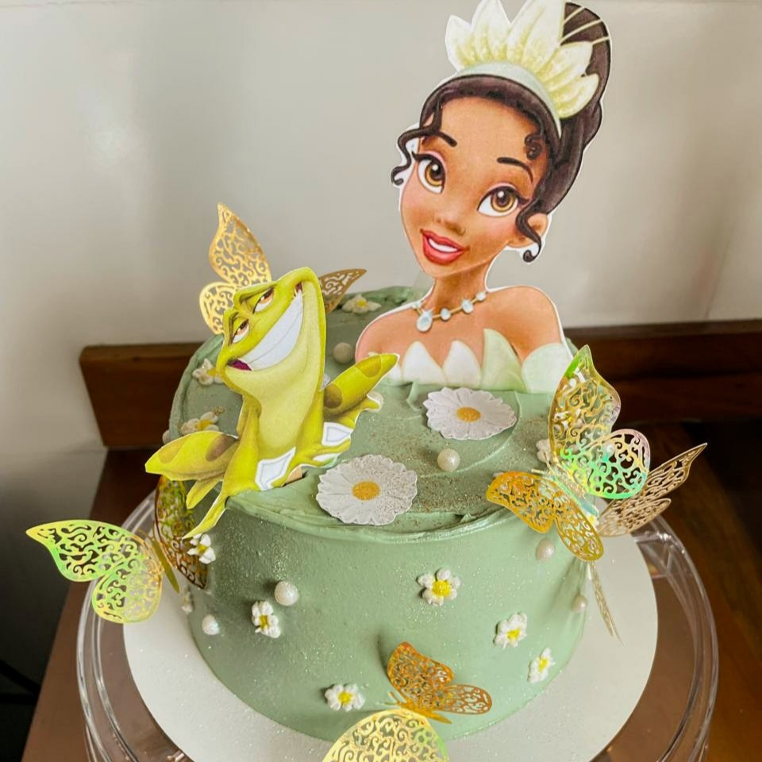
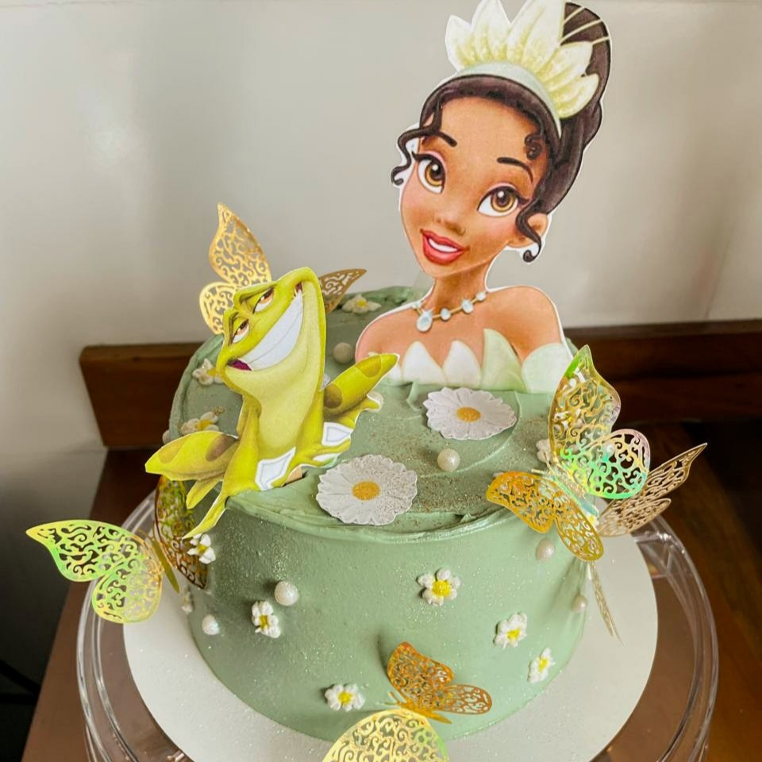

ADOCE SEU DIA!
Encante-se com nossos doces gourmet
feitos com ingredientes selecionados e
receitas exclusivas. Bolos, brownie e bolos
de pote que transformam qualquer
momento em uma ocasião especial.
Peça agora e experimente o sabor do carinho!


 
